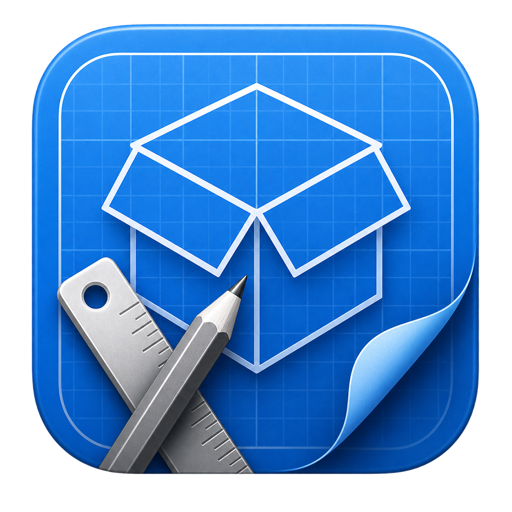
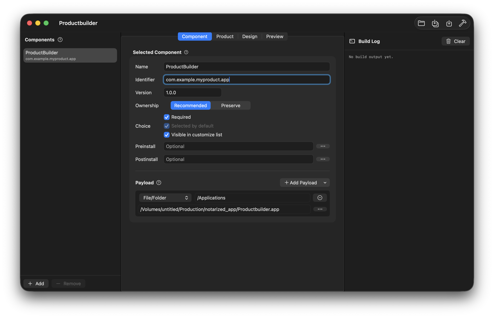
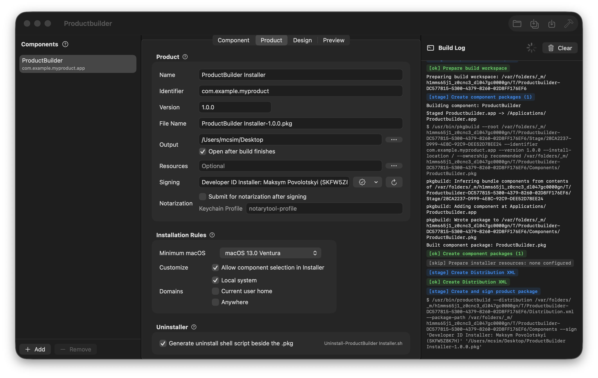
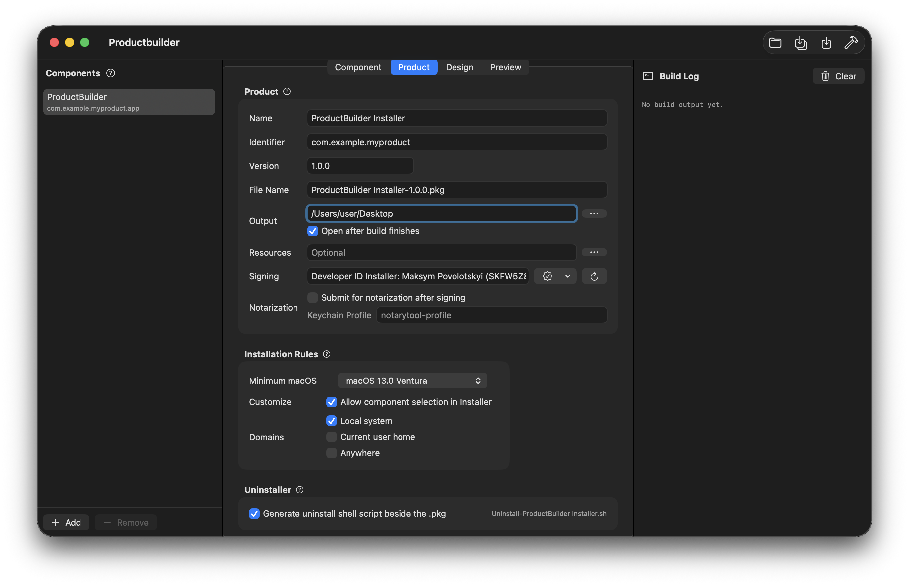
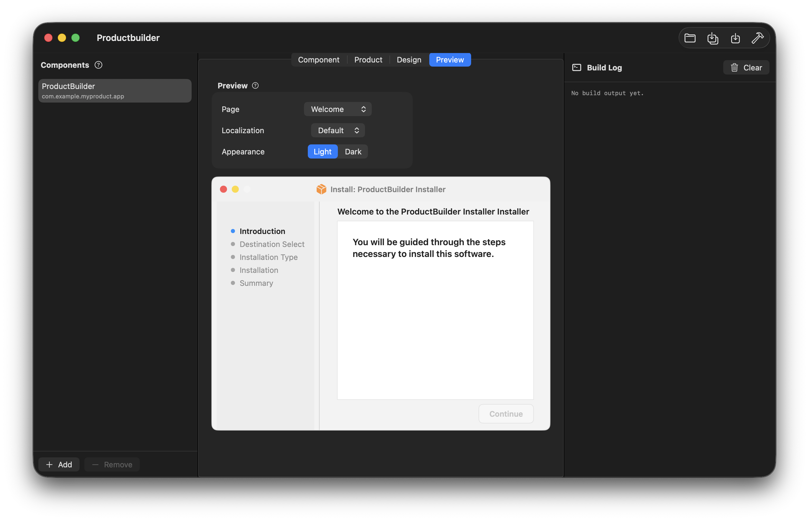
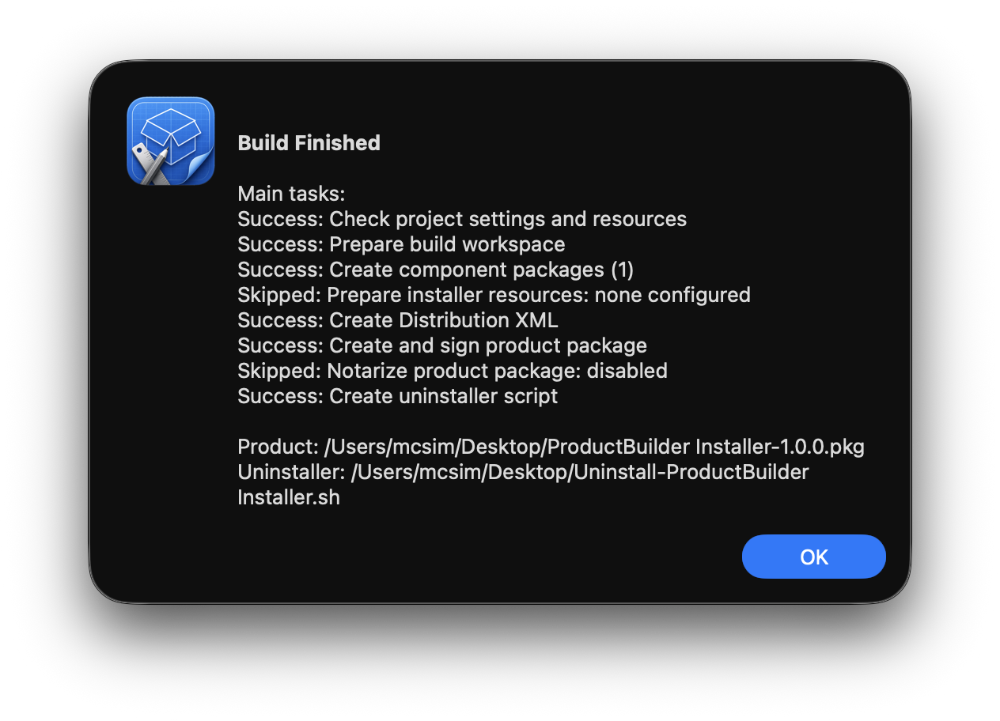

Readable projects
Save packaging settings as JSON so projects can be reviewed, reused, and built later.

Productbuilder DownloadNative macOS packaging tool
Productbuilder turns payloads, scripts, installer resources, signing settings, and readable JSON projects into clean macOS product packages.

What it does
Save packaging settings as JSON so projects can be reviewed, reused, and built later.
Build multi-component installers with payloads, scripts, identifiers, versions, and choices.
Add welcome, read me, license, conclusion, logo, backgrounds, and localized .lproj folders.
Use signing identities, install domains, minimum macOS checks, and optional uninstall scripts.
Real workflow
The app keeps packaging decisions, installer previews, build commands, and final output in one native macOS workflow.




Guide
Create one component for each app, helper, resource pack, or optional install group.
Choose files, folders, folder contents, or empty directories and set destination paths.
Set name, identifier, version, output file, install domains, signing, and requirements.
Attach branded installer resources and preview how the package will appear to users.
Generate the final .pkg and review the exact pkgbuild and productbuild commands.
Settings
Payload kind, destination path, ownership, choice behavior, preinstall, and postinstall scripts.
Installer name, identifier, version, output folder, minimum macOS, domains, signing, uninstaller.
Installer pages, localization variants, package icon, light background, and dark background.
Installer-facing presentation metadata before you create the final package.
Monetization direction
Build a basic unsigned .pkg with one component and a readable JSON project.
$0Signing, multi-component installers, scripts, branding, localization, uninstaller, and CLI automation.
PlannedSupport
Donations support development and are not a license purchase. Payment links are placeholders until the official mono and Donatello pages are connected.
Support
Productbuilder is designed for developers, release engineers, and macOS app maintainers who need a focused alternative to legacy package-authoring workflows.